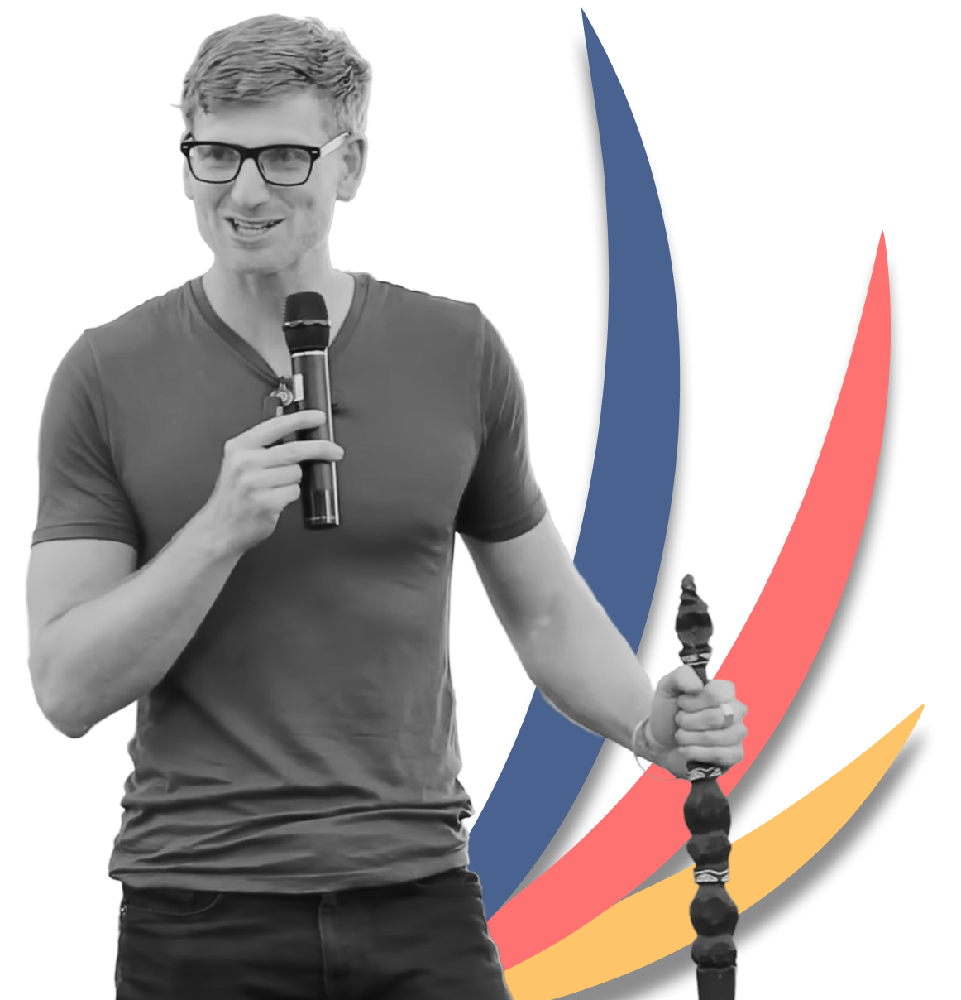
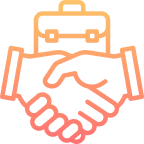
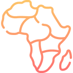
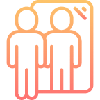
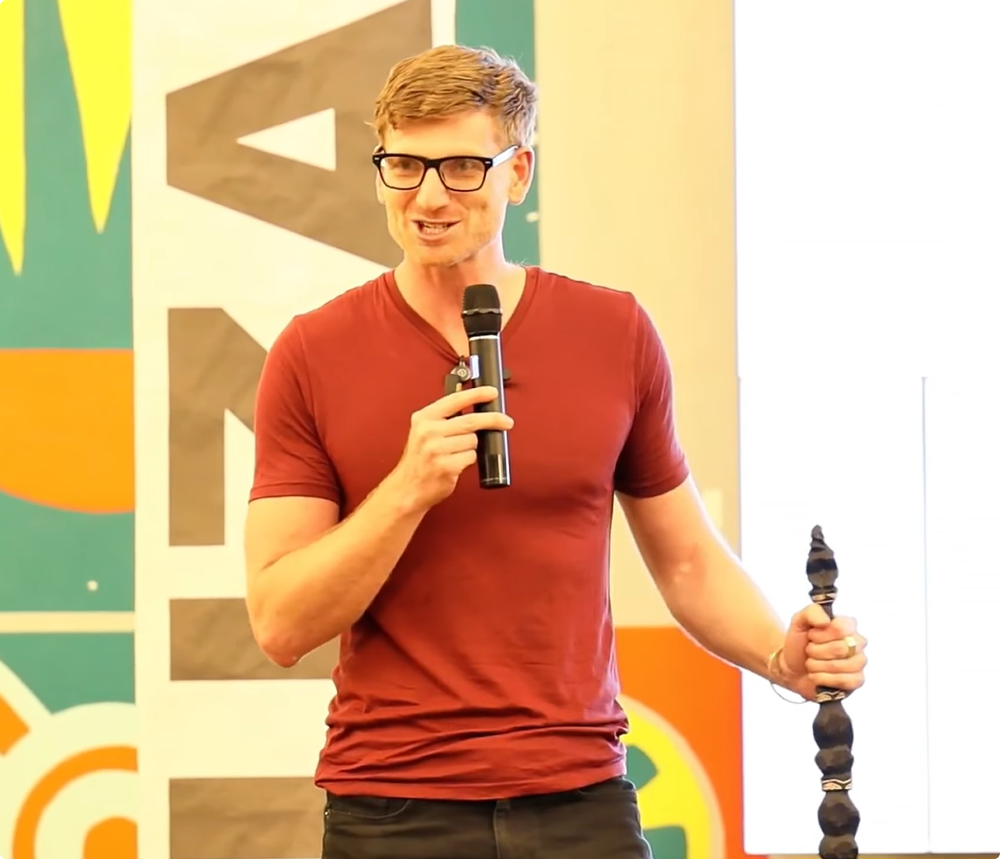
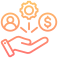
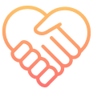
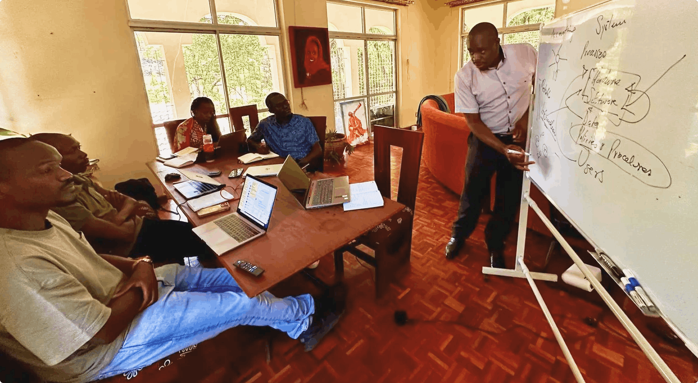

A biomedical engineer-turned-entrepreneur, Kyle Schutter has taken his journey from Brown University to Nairobi, where he has explored ventures across multiple industries and continents. From building biogas businesses to running Thai food ventures and gaining experience in Silicon Valley and Peru, each chapter shaped his entrepreneurial path, ultimately leading him back to East Africa with a clear and focused mission.

Capital raised
In East Africa
Millionaires by 2040
After graduating in Biomedical Engineering from Brown University, Kyle faced a choice that most people in his position didn't think twice about: take a job in consulting or finance in New York and know exactly what the next ten years would look like, or go to Africa and not know what the next ten days would hold.
He chose Africa.
He visited Ghana, Uganda, Ethiopia, Rwanda, and Tanzania, and eventually landed in Kenya. His reasoning was unusual, but practical: Kenya had blue cheese in the supermarket. That showed there was a growing middle class, working infrastructure, and active local businesses, strong signs that Kenya had real business potential.

What built Kuzana wasn’t one breakthrough moment; it was Kyle’s 15-year journey of experimentation, resilience, and real-world business lessons that transformed how he thinks about growth and sustainability.

Kyle moved to Nairobi and spent five years building a biogas company, raising $1M and securing a patent. Despite the innovation, the business struggled because the model and the customer market were misaligned.
After the biogas venture, Kyle launched a Thai restaurant in Nairobi that became profitable from the very first month, proving how powerful repeat customers and the right market positioning can be.
To strengthen his sales skills, Kyle moved to Silicon Valley. But feeling disconnected from the path, he left midway and rode south on a motorcycle in search of clarity and a deeper purpose.

While in Peru, Kyle reconnected with networks across East Africa and began helping businesses raise capital, eventually mobilizing more than $20M for companies operating throughout the region.

Over time, Kyle noticed that flashy startups often struggled, while “boring” businesses quietly succeeded. That insight inspired a mission to help founders build practical, profitable, and sustainable companies.
After helping raise more than $20M for businesses across East Africa, he began noticing a clear pattern. The flashy tech and impact startups, the ones attracting media attention and investor excitement, often struggled to build sustainable businesses.
But the so-called “boring” businesses were quietly outperforming.
He saw agri-processing businesses generate steady demand, strong unit economics, and long-term value by solving essential everyday needs within local economies.
Manufacturing businesses stood out as difficult to replicate, with success driven by operational strength and execution rather than by storytelling or investor hype.
Logistics and retail businesses created real economic value by improving movement, access, and efficiency, solving practical problems faced by businesses and consumers every single day.

At the early stage, investors evaluate not just the idea, but the founder behind it. In Kenya’s startup ecosystem, resilience, adaptability, and execution often matter more than resources.

Kyle believes the strongest founders are deeply committed to solving a real problem, not just building a startup. In his experience, founders who stay focused during difficult phases are far more likely to succeed.


Kyle looks for founders who can make progress despite limited funding or infrastructure. He values people who find creative ways to acquire customers, test ideas, and build momentum.

According to Kyle, markets change quickly, so adaptability matters. He pays attention to founders who actively seek feedback, learn from customers, and adjust their strategies fast.

Kyle has seen many startups fail because they try to do too much at once. He prefers founders who stay focused on solving one specific problem and execute consistently.


For Kyle, early revenue is a strong signal of real demand. Even small wins, such as paid pilots or pre-orders, show that customers genuinely value the solution.


Kyle trusts founders who are honest about challenges, traction, and areas that still need improvement instead of trying to oversell progress.


Kyle values founders who surround themselves with mentors, builders, and feedback loops while remaining open to learning and improving.

Execution matters more than ideas in Kyle’s view. He pays attention to founders who consistently ship products, test ideas, and engage with users instead of staying stuck in planning mode.

The goal is not to chase unicorns or build businesses around hype. The vision is to back practical, cash-flowing companies that solve real problems, create lasting value, and quietly compound wealth over time.
By supporting disciplined founders building durable businesses across sectors such as manufacturing, agriculture, logistics, and retail, the mission is simple: to help create 1,000 millionaires across Africa by 2040.
$20K equity investment · 12 months of hands-on support · A partner who stays forever.